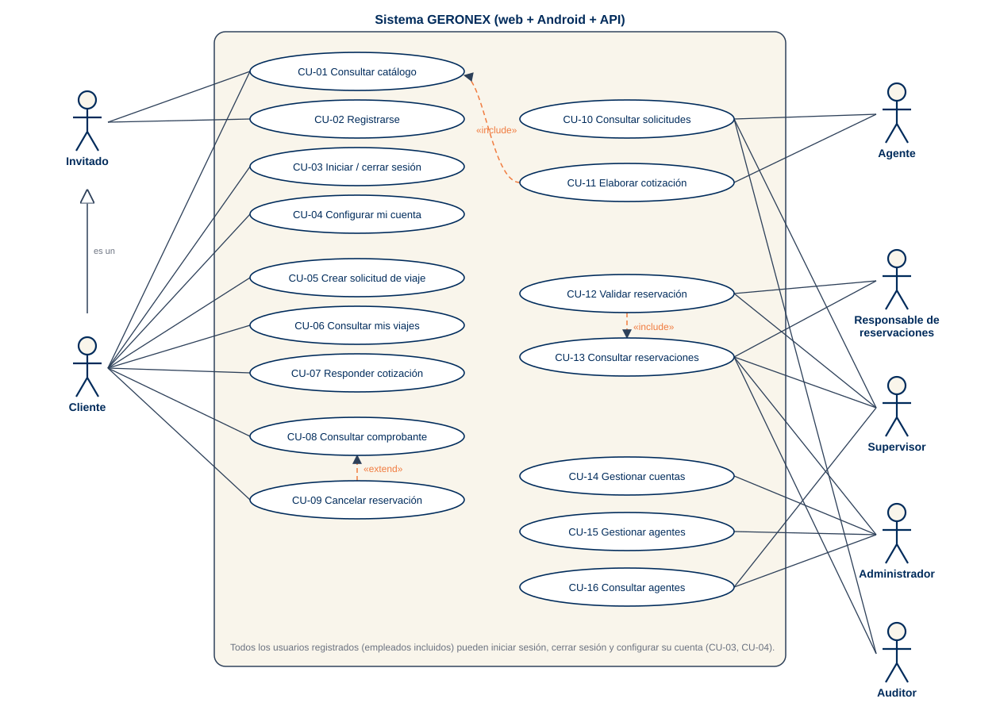
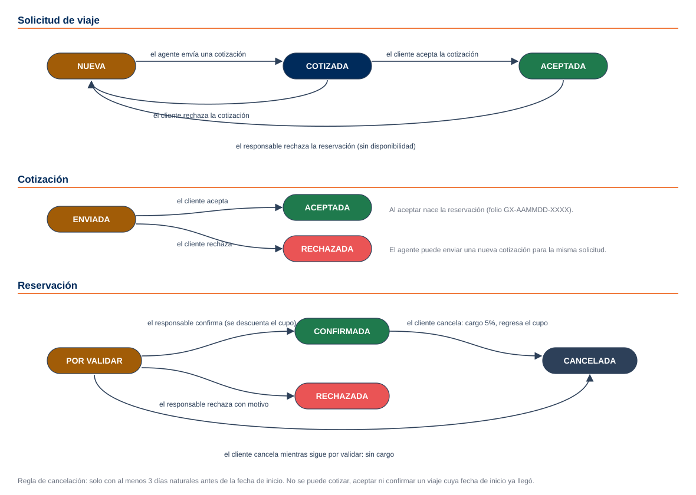
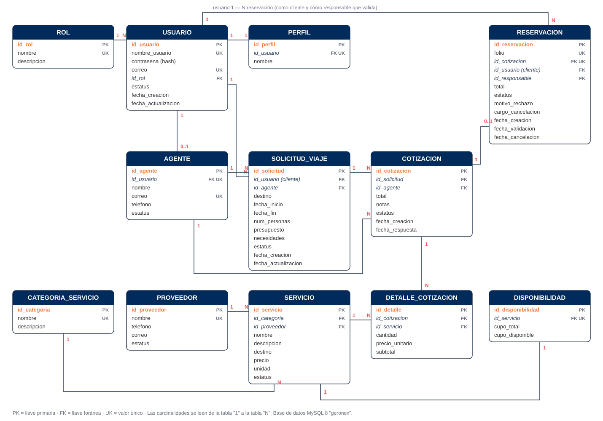

Centro de Estudios Científicos y Tecnológicos No. 9 “Juan de Dios Bátiz”
Laboratorio de Desarrollo de Software III · Grupo 5IM8
GERONEX
Gestiona, Conecta y Crece
Documentación del sistema
Plataforma de viajes asistidos para la agencia Iamonos
Objetivos · Requerimientos · Casos de uso · Diagrama entidad-relación · Diccionario de datos
Integrantes
Cárdenas Hernández Omar Yoel
Portillo Morales Yael Sebastián
Vega Beid David
Noviembre de 2026
1. Descripción general del sistema
GERONEX es la plataforma que moderniza el sistema de la agencia de viajes Iamonos. Funciona como una agencia asistida: el cliente no compra servicios sueltos, sino que pide un viaje y un agente de la agencia le arma una cotización a su medida con hoteles, vuelos, transporte y tours del catálogo. Si el cliente la acepta, nace una reservación que el responsable de reservaciones valida contra la disponibilidad de los proveedores.
El sistema está formado por cuatro partes que trabajan sobre una sola base de datos:
Parte
Tecnología
Qué hace
Página web
HTML, CSS y JavaScript
Catálogo público y páginas de trabajo para cada rol: cliente, agente, responsable de reservaciones, supervisor, auditor y administrador.
Aplicación móvil
Android nativo en Java (Android 7 o superior)
Todo lo del cliente: catálogo, pedir viajes, responder cotizaciones, reservaciones y comprobante.
Backend (API REST)
Java 21, Spring Boot 4.1, Spring Security con JWT
Concentra todas las reglas de negocio, la seguridad por roles y el acceso a datos. La web y Android solo se comunican con la API.
Base de datos
MySQL 8
Base geronex con 12 tablas: cuentas, catálogo, agentes, solicitudes, cotizaciones y reservaciones.
Arquitectura MVC: el Modelo son las entidades JPA y la base MySQL; el Controlador es el backend Spring Boot (controladores REST y servicios); las Vistas son la página web y la aplicación Android, que consumen la misma API.
2. Objetivos
2.1 Objetivo general
Desarrollar una plataforma digital para la agencia de viajes Iamonos, compuesta por una página web y una aplicación Android conectadas a un mismo backend y a una base de datos MySQL compartida, que permita a los clientes consultar los servicios y contratar viajes armados por un agente de manera práctica, intuitiva y funcional, y que facilite al personal de la agencia la gestión de solicitudes, cotizaciones y reservaciones.
2.2 Objetivos específicos
Permitir que cualquier visitante consulte el catálogo de servicios (hoteles, vuelos, transporte y paquetes) sin iniciar sesión, con búsqueda, filtros y detalle de cada servicio.
Implementar el registro, el inicio de sesión y la configuración de la cuenta con contraseñas protegidas mediante hash BCrypt y sesiones con token JWT.
Controlar el acceso por roles (cliente, agente, responsable de reservaciones, supervisor, auditor y administrador), de modo que cada usuario solo vea y haga lo que le corresponde.
Permitir que el cliente registre solicitudes de viaje con destino, fechas, número de personas, presupuesto y necesidades.
Permitir que el agente elabore cotizaciones con servicios del catálogo, con el total calculado por el sistema y el precio del momento guardado.
Permitir que el cliente acepte o rechace cada cotización y que, al aceptarla, se genere una reservación con folio único.
Permitir que el responsable de reservaciones confirme o rechace las reservaciones validando la disponibilidad, y que el cupo se descuente y se restituya de forma consistente.
Mostrar un comprobante completo de cada reservación e implementar la cancelación con la regla de 3 días de anticipación y el cargo del 5%.
Mantener la información sincronizada entre la web y Android al usar la misma API y la misma base de datos.
3. Reglas de negocio
Clave
Regla
RN-01
Cualquier persona puede consultar el catálogo. Para pedir un viaje se necesita una cuenta de cliente.
RN-02
El registro público siempre crea cuentas con rol CLIENTE. Las cuentas de empleados las crea el administrador; el primer administrador se crea con un script de la base de datos.
RN-03
El nombre de usuario tiene máximo 15 caracteres y es único. El correo es único. La contraseña tiene de 8 a 50 caracteres y se guarda solo como hash BCrypt.
RN-04
Una solicitud de viaje requiere destino, fecha de inicio posterior a hoy, fecha de regreso no anterior al inicio y de 1 a 50 personas. El presupuesto es opcional y no negativo.
RN-05
Solo un agente con ficha ACTIVA puede cotizar, y solo solicitudes en estatus NUEVA. No se repiten servicios en una cotización y cada cantidad debe caber en el cupo disponible.
RN-06
El total de la cotización lo calcula el backend con los precios vigentes del catálogo. Cada renglón guarda el precio del momento, así un cambio posterior de precio no altera la cotización.
RN-07
Si el cliente acepta, la cotización pasa a ACEPTADA y nace una reservación POR_VALIDAR con folio único GX-AAMMDD-XXXX. Si la rechaza, la solicitud vuelve a NUEVA para recibir otra propuesta.
RN-08
El responsable de reservaciones (o el supervisor) confirma la reservación solo si hay cupo para todos los servicios; al confirmar se descuenta el cupo. Si no hay disponibilidad, la rechaza con un motivo y la solicitud regresa a NUEVA.
RN-09
El cliente puede cancelar una reservación POR_VALIDAR o CONFIRMADA si faltan al menos 3 días naturales para la fecha de inicio. Si estaba CONFIRMADA se registra un cargo del 5% del total (sin cobro real) y se devuelve el cupo; si estaba POR_VALIDAR no hay cargo.
RN-10
No se puede cotizar, aceptar ni confirmar un viaje cuya fecha de inicio ya llegó o ya pasó.
RN-11
Las bajas son lógicas (estatus). Dar de baja a un agente desactiva también su cuenta, y su sesión deja de funcionar de inmediato.
RN-12
Un cliente solo puede ver sus propias solicitudes, cotizaciones y reservaciones. Si intenta abrir una ajena, el sistema responde como si no existiera.
4. Requerimientos funcionales
Se conservan las claves del documento de seguimiento (Sprint 2). La columna Estado indica cómo quedó cada requerimiento en esta versión: Implementado, Parcial (cubierto en lo esencial, con una diferencia que se explica) o Siguiente fase (fuera de esta entrega).
Bloque 1. Registro, acceso y administración de usuarios
Clave
Requerimiento
Estado
Dónde / observaciones
RF-01.1
Registro de clientes
Implementado
Web (login.html) y Android (Registro). POST /auth/registro.
RF-01.2
Nombre de usuario único
Implementado
Mensaje “Ese nombre de usuario ya está en uso” (409). También el correo es único.
RF-01.3
Inicio de sesión
Implementado
Token JWT de 60 minutos; mensaje genérico si los datos son incorrectos.
RF-01.4
Identificación del rol
Implementado
Cada rol entra a su página de trabajo y ve solo sus opciones.
RF-01.5
Acceso de invitado
Implementado
Catálogo público sin sesión.
RF-01.6
Registro interno de cuentas
Implementado
El administrador crea cuentas de empleados en admin.html; el primero se crea con un script.
RF-01.7
Asignación de roles
Parcial
El rol se asigna al crear la cuenta; para cambiarlo se crea una cuenta nueva.
RF-01.8
Restricción por permisos
Implementado
Reglas por rol en el backend (403) y redirección en la web aunque se escriba la dirección.
RF-01.9
Cierre de sesión
Implementado
Web y Android.
Bloque 2. Perfil y datos de los usuarios
Clave
Requerimiento
Estado
Dónde / observaciones
RF-02.1
Consulta del perfil propio
Implementado
“Mi cuenta” en web y Android; nombre y correo editables.
RF-02.4
Confirmación de contraseña
Implementado
Se pide la contraseña actual, la nueva y su confirmación.
RF-02.6
Consulta administrativa de clientes
Parcial
El administrador consulta todas las cuentas; el historial de cada cliente se ve en las bandejas de solicitudes y reservaciones.
RF-02.7
Búsqueda de clientes
Implementado
Búsqueda por usuario, nombre o correo (admin) y por cliente en las bandejas.
RF-02.8
Asociación de operaciones
Implementado
Cada solicitud, cotización y reservación queda ligada a su cliente.
Bloque 3. Consulta y búsqueda de paquetes y servicios
Clave
Requerimiento
Estado
Dónde / observaciones
RF-03.1
Consulta pública
Implementado
Web (inicio) y Android (Catálogo).
RF-03.2
Búsqueda de servicios
Parcial
Por destino, nombre o proveedor, sin importar acentos. Las fechas y el número de viajeros se capturan en la solicitud; el dato de mascotas aún no existe en el catálogo.
RF-03.3
Filtros de búsqueda
Parcial
Por tipo, destino, precio máximo y disponibilidad, con orden por precio, nombre o cupo. Falta el filtro por público objetivo.
RF-03.4
Consulta de detalles
Implementado
Ventana de detalle con descripción, proveedor, precio, unidad y disponibilidad.
RF-03.5 / 03.6
Público objetivo de paquetes
Siguiente fase
Requiere la tabla publico_objetivo del diagrama ER.
RF-03.7
Servicios que admiten mascotas
Siguiente fase
Requiere el campo admite_mascotas en servicio.
RF-03.8
Consulta interna de servicios
Implementado
Catálogo dentro del cotizador del agente, con cupo y cantidad sugerida.
RF-03.9
Búsqueda administrativa
Parcial
Por destino, proveedor y categoría en el catálogo general.
RF-03.10
Disponibilidad registrada
Implementado
El agente y el responsable ven el cupo de cada servicio.
Bloque 4. Gestión de proveedores, paquetes, servicios y precios
Clave
Requerimiento
Estado
Dónde / observaciones
RF-04.1 a 04.10
Registro y modificación de proveedores, servicios, precios, disponibilidad y retiro de publicación
Siguiente fase
En esta versión el catálogo son datos de ejemplo que administra el equipo con el script 04_datos_ejemplo.sql. Las tablas ya existen y tienen estatus para el retiro lógico.
RF-04.11
Consulta de precios por agentes
Implementado
En el cotizador.
RF-04.12
Validación de datos comerciales
Implementado
Restricciones CHECK en la base (precio ≥ 0, cupos válidos).
RF-04.13
Conservación del precio cotizado
Implementado
detalle_cotizacion.precio_unitario guarda el precio del momento.
RF-04.14
Seguimiento con proveedores
Parcial
El resultado se registra al confirmar o rechazar (motivo) la reservación.
Bloque 5. Solicitudes de viaje y cotizaciones
Clave
Requerimiento
Estado
Dónde / observaciones
RF-05.1
Registro de solicitudes
Implementado
El cliente, desde web y Android.
RF-05.2
Asignación de agente
Parcial
El agente que cotiza queda asignado a la solicitud; no hay asignación manual por el supervisor.
RF-05.3
Consulta de solicitudes pendientes
Implementado
Bandeja del agente con pestañas, búsqueda, orden y aviso de solicitudes nuevas.
RF-05.4
Selección de servicios
Implementado
Uno o varios servicios, con cantidad sugerida (noches o personas).
RF-05.5
Cálculo de cotización
Implementado
El backend calcula el total; el navegador nunca manda precios.
RF-05.6
Desglose de importes
Implementado
Precio, cantidad y subtotal de cada servicio, y el total.
RF-05.7
Ajustes comerciales
Siguiente fase
Requiere la tabla ajuste_cotizacion.
RF-05.8
Validación previa
Implementado
Cupo, servicios activos, sin repetidos, solicitud NUEVA y fecha vigente.
RF-05.9
Identificador de cotización
Implementado
Número de cotización único.
RF-05.10
Modificación de cotización
Parcial
Si el cliente la rechaza, el agente envía una cotización nueva; las anteriores quedan en el historial.
RF-05.11
Consulta de cotizaciones
Implementado
Cliente (Mis viajes) y empleados (bandeja).
RF-05.12
Estado de cotización
Implementado
ENVIADA, ACEPTADA o RECHAZADA.
RF-05.13
Aceptación o rechazo
Implementado
Con confirmación y comparación contra el presupuesto.
RF-05.14
Seguimiento comercial
Parcial
Pestaña “Esperando cliente”; no se registran acciones de seguimiento.
RF-05.15
Consulta de supervisión
Implementado
El supervisor y el auditor ven la bandeja con importe y agente.
RF-05.16
Historial de cotizaciones
Implementado
Cotizaciones anteriores de cada solicitud.
RF-05.17
Comprobante de cotización
Implementado
cotizacion.html: identificador, cliente, viaje, servicios, importes, fecha y estado; imprimible o en PDF. Lo abren el cliente y el agente.
Bloque 6. Gestión de reservaciones
Clave
Requerimiento
Estado
Dónde / observaciones
RF-06.1
Creación de reservación
Implementado
Nace automáticamente al aceptar la cotización (POR_VALIDAR) y el responsable la valida.
RF-06.2
Registro de reservación
Implementado
Folio, cliente, servicios, fechas, importe y responsable.
RF-06.3
Confirmación de disponibilidad
Implementado
La bandeja muestra si alcanza el cupo de cada servicio.
RF-06.4
Estados de reservación
Implementado
POR_VALIDAR, CONFIRMADA, RECHAZADA y CANCELADA.
RF-06.5
Modificación de reservación
Siguiente fase
Requiere la tabla solicitud_cambio.
RF-06.6 / 06.7
Solicitud y atención de cancelaciones
Parcial
El cliente cancela directamente si cumple la regla de 3 días; el sistema aplica la regla sin intervención.
RF-06.8
Cancelación de reservación
Implementado
Se registran fecha y cargo; en los rechazos, el motivo.
RF-06.9
Consulta de reservaciones del cliente
Implementado
Solo las propias (web y Android).
RF-06.10 / 06.11
Consulta operativa y supervisión
Implementado
Bandeja con pestañas, resumen, búsqueda y orden.
RF-06.12
Historial de reservaciones
Implementado
Filtro por estatus.
RF-06.13
Prevención de duplicados
Implementado
Una reservación por cotización (UNIQUE) y bloqueo de filas en operaciones simultáneas.
RF-06.14
Asociación con proveedores
Implementado
Cada renglón liga servicio y proveedor.
RF-06.15
Comprobante de reservación
Implementado
Web imprimible / PDF; en Android se comparte y se copia el folio.
Bloques 7 a 10. Historial, administración, reportes y trazabilidad
Clave
Requerimiento
Estado
Dónde / observaciones
RF-07.1 a 07.3
Historial comercial (propio, por agentes y administrativo)
Implementado
Mis viajes / Mis reservaciones y bandejas de empleados.
RF-07.4
Búsqueda en el historial
Parcial
Por cliente, folio, destino y estatus; no por rango de fechas.
RF-08.1
Panel administrativo
Implementado
Resumen de cuentas, clientes, agentes, servicios, solicitudes por cotizar, reservaciones por validar y ventas.
RF-08.2
Consulta de personal
Implementado
Tabla de cuentas con filtro por rol.
RF-08.3 / 08.5
Asignación y reasignación de operaciones
Siguiente fase
Requiere la tabla reasignacion.
RF-08.4 / 08.6
Seguimiento e identificación de pendientes
Implementado
Pestañas “Por cotizar” y “Por validar” con contadores.
RF-08.7
Indicadores operativos
Implementado
Tarjetas de resumen en cada bandeja.
RF-08.8
Restricción de supervisión
Implementado
El supervisor valida y consulta, pero no administra cuentas.
RF-09.1 a 09.4
Reportes y consultas
Parcial
Consultas con filtros en pantalla; no hay reportes exportables.
RF-10.1 a 10.3
Bitácora de auditoría
Siguiente fase
Requiere la tabla auditoria. Hoy cada reservación guarda quién y cuándo la validó o canceló.
RF-10.4 / 10.5
Acceso limitado y verificación de permisos
Implementado
Se verifica el rol en cada petición; el auditor solo consulta.
5. Requerimientos no funcionales
Clave
Tipo
Requerimiento
Cómo se cumple
RNF-01
Usabilidad
Interfaz clara, intuitiva y consistente en web y Android, con la paleta de GERONEX.
Mismos colores, textos de estatus e imágenes en ambas plataformas; diseño adaptable al celular.
RNF-02
Usabilidad
Mensajes claros de validación, falta de disponibilidad y condiciones de cancelación.
Mensajes por campo en español, avisos de cupo y de fecha límite.
RNF-03
Seguridad
Contraseñas almacenadas solo como hash.
BCrypt; nunca se devuelven en la API.
RNF-04
Seguridad
Autenticación y autorización por rol en cada operación.
JWT HS256 de 60 minutos; reglas por ruta en Spring Security; en Android el token se guarda cifrado (AES-GCM, Android Keystore).
RNF-05
Seguridad
Mínimo privilegio en la base de datos.
El backend usa la cuenta geronex_app con permisos SELECT, INSERT y UPDATE solamente.
RNF-06
Integridad
Las reservaciones y la disponibilidad deben mantenerse consistentes.
Transacciones con bloqueo de filas (SELECT … FOR UPDATE); restricciones CHECK, UNIQUE y llaves foráneas.
RNF-07
Mantenibilidad
Código modular, organizado por capas (controlador, servicio, repositorio) y por módulo.
Paquetes auth, usuario, catálogo, agente, admin y operación; utilidades compartidas en web y Android.
RNF-08
Interoperabilidad
Web y Android comparten la misma API REST y la misma base de datos.
Respuestas JSON con un formato único de error: {estado, mensaje, errores, fecha}.
RNF-09
Rendimiento
Las consultas responden en menos de 2 segundos en el entorno local.
Consultas con JOIN FETCH; la búsqueda del catálogo se hace en memoria.
RNF-10
Disponibilidad
El sistema funciona en el entorno local de la demostración, incluso sin internet.
Imágenes y estilos locales; Android se conecta por USB con adb reverse.
RNF-11
Compatibilidad
Navegadores actuales (Chrome, Edge, Firefox) y Android 7 o superior.
minSdk 24 en Android; HTML y CSS estándar en la web.
6. Requerimientos del sistema
6.1 Para el desarrollo y la demostración
Recurso
Requerimiento
Hardware
Computadora con 8 GB de RAM (mínimo 4 GB) y al menos 10 GB libres en disco. Teléfono Android 7 o superior con cable USB (opcional).
Software
Windows 10/11; JDK 21 o superior; Maven (incluido en IntelliJ IDEA); MySQL Server 8.0 y MySQL Workbench; IntelliJ IDEA (backend y web); Android Studio (app); Node.js 18+ (opcional, para las pruebas automáticas y el servidor web local).
Red
No requiere internet: backend en el puerto 8080, MySQL en el 3306 y web en el 63342 (IntelliJ) o en el 8090 (servidor local). El teléfono se conecta por USB con adb reverse tcp:8080 tcp:8080.
Configuración
Variables de entorno del backend: DB_USER, DB_PASSWORD, JWT_SECRET (32 caracteres o más) y CORS_ORIGENES. Scripts de base de datos 01 a 05 ejecutados en orden.
6.2 Para los usuarios
Recurso
Requerimiento
Web
Navegador actualizado (Chrome, Edge o Firefox) en computadora o celular.
Android
Teléfono con Android 7.0 o superior.
Cuenta
Para consultar el catálogo no se necesita cuenta; para pedir viajes, una cuenta de cliente; los empleados, una cuenta creada por el administrador.
7. Diagrama y especificación de casos de uso

Figura 1. Diagrama de casos de uso.
7.1 Actores
Actor
Descripción
Invitado
Persona sin sesión. Consulta el catálogo y puede crear una cuenta.
Cliente
Invitado con cuenta. Pide viajes, responde cotizaciones y administra sus reservaciones (web y Android).
Agente
Atiende las solicitudes y elabora las cotizaciones.
Responsable de reservaciones
Valida la disponibilidad y confirma o rechaza las reservaciones.
Supervisor
Da seguimiento a solicitudes, valida reservaciones y consulta a los agentes.
Administrador
Gestiona cuentas y agentes y consulta la operación.
Auditor
Consulta solicitudes y reservaciones sin poder modificarlas.
7.2 Especificación de los casos de uso
Los casos CU-02 (Registrarse), CU-03 (Iniciar sesión) y CU-04 (Configuración de perfil) se documentaron en los Sprints 4 y 5 y siguen vigentes. A continuación se especifican los casos del negocio.
CU-01 Consultar catálogo
Actores
Invitado, Cliente
Descripción
Permite ver los servicios publicados, buscarlos, filtrarlos y abrir su detalle.
Precondición
Ninguna (no requiere sesión).
Flujo básico
1. El actor abre la página de inicio o la sección Catálogo de la app. 2. El sistema muestra los destinos populares y los servicios activos con su imagen, precio, unidad y cupo. 3. El actor escribe un texto, elige un tipo, un destino, un precio máximo o un orden. 4. El sistema muestra solo los servicios que cumplen los filtros y cuántos son. 5. El actor abre un servicio. 6. El sistema muestra su detalle y la opción “Solicitar viaje a…”.
Flujos alternos
4a. Ningún servicio cumple los filtros: el sistema lo indica e invita a pedir un viaje. 6a. El actor elige “Solicitar” sin sesión: el sistema lo lleva a iniciar sesión y, al entrar como cliente, a la solicitud con ese destino.
Postcondición
No se modifica información.
CU-05 Crear solicitud de viaje
Actor
Cliente
Descripción
El cliente pide un viaje para que un agente le prepare una cotización.
Precondición
El cliente inició sesión.
Flujo básico
1. El cliente elige “Pedir un viaje”. 2. El sistema muestra el formulario con sugerencias de destinos. 3. El cliente captura destino, fechas, personas y, si quiere, presupuesto y necesidades. 4. El sistema muestra la duración del viaje. 5. El cliente envía la solicitud. 6. El sistema valida RN-04, registra la solicitud en estatus NUEVA y la muestra en “Mis viajes”.
Flujos alternos
6a. Fecha de inicio no posterior a hoy, regreso antes de la ida, personas fuera de 1 a 50 o presupuesto negativo: el sistema indica el error del campo y no registra. 4a. Faltan menos de 3 días: el sistema advierte que no se podrá cancelar.
Postcondición
La solicitud aparece en la bandeja de los agentes.
CU-06 Consultar mis viajes
Actor
Cliente
Descripción
El cliente revisa sus solicitudes, su progreso y las cotizaciones recibidas.
Precondición
El cliente inició sesión.
Flujo básico
1. El cliente abre “Mis viajes”. 2. El sistema muestra un resumen y sus solicitudes con estatus, fechas, progreso en cuatro pasos y, si existe, la cotización vigente con su desglose. 3. El cliente filtra por “Esperando cotización”, “Por responder” o “Aceptadas”. 4. El sistema se actualiza solo cada pocos segundos y avisa cuando llega una cotización nueva.
Flujos alternos
2a. No tiene solicitudes: el sistema lo indica y ofrece crear una.
Postcondición
No se modifica información.
CU-07 Responder cotización
Actor
Cliente
Descripción
El cliente acepta o rechaza la cotización que le envió su agente.
Precondición
Existe una cotización ENVIADA de una solicitud del cliente y la fecha del viaje no ha llegado.
Flujo básico (aceptar)
1. El cliente revisa la cotización y su comparación con el presupuesto. 2. Elige “Aceptar y reservar”. 3. El sistema pide confirmación con el total. 4. El cliente confirma. 5. El sistema marca la cotización ACEPTADA, la solicitud ACEPTADA y crea la reservación POR_VALIDAR con folio único. 6. El sistema muestra el folio y el acceso al comprobante.
Flujo alterno (rechazar)
2a. El cliente elige “Rechazar” y confirma. El sistema marca la cotización RECHAZADA y la solicitud vuelve a NUEVA para recibir otra propuesta.
Excepciones
La cotización ya fue respondida o la fecha de inicio ya llegó: el sistema lo informa y no hace cambios.
Postcondición
Aceptada: la reservación aparece en la bandeja del responsable. Rechazada: la solicitud regresa a la bandeja de los agentes.
CU-08 Consultar comprobante
Actores
Cliente (solo los suyos), Responsable de reservaciones, Supervisor, Administrador, Auditor
Descripción
Muestra todos los datos de una reservación: folio, estatus, cliente, viaje, servicios, total, cargo y regla de cancelación.
Precondición
La reservación existe y el actor tiene permiso para verla.
Flujo básico
1. El actor abre el comprobante desde sus reservaciones o desde la bandeja. 2. El sistema muestra el comprobante con un aviso según el estatus y, si aplica, la cuenta regresiva y la fecha límite para cancelar. 3. El actor puede imprimirlo o guardarlo en PDF (web), o compartirlo y copiar el folio (Android).
Flujos alternos
1a. Un cliente intenta abrir una reservación ajena: el sistema responde que no existe.
Postcondición
No se modifica información.
CU-09 Cancelar reservación («extend» de CU-08)
Actor
Cliente
Descripción
El cliente cancela su reservación cumpliendo la regla RN-09.
Precondición
La reservación es del cliente, está POR_VALIDAR o CONFIRMADA y faltan al menos 3 días para el viaje.
Flujo básico
1. Desde el comprobante, el cliente elige “Cancelar reservación”. 2. El sistema explica si hay cargo (5% si estaba confirmada) y pide confirmación. 3. El cliente confirma. 4. El sistema marca la reservación CANCELADA, registra la fecha y el cargo y, si estaba confirmada, devuelve el cupo de cada servicio. 5. El comprobante se actualiza.
Flujos alternos
1a. Ya pasó la fecha límite: el botón no aparece y el sistema muestra la fecha límite. 4a. Si se intentara por la API, el sistema responde con el motivo y no cancela.
Postcondición
Reservación cancelada; cupo restituido cuando corresponde.
CU-10 Consultar solicitudes
Actores
Agente, Supervisor, Auditor
Descripción
Muestra la bandeja de solicitudes con su detalle e historial de cotizaciones.
Precondición
El actor inició sesión con uno de esos roles.
Flujo básico
1. El actor abre “Solicitudes”. 2. El sistema muestra el resumen y las solicitudes “Por cotizar”. 3. El actor cambia de pestaña, busca por destino, cliente o número y ordena. 4. El actor abre una solicitud. 5. El sistema muestra los datos del cliente y del viaje y las cotizaciones enviadas.
Flujos alternos
2a. Llega una solicitud nueva mientras la bandeja está abierta: el sistema la agrega y avisa.
Postcondición
No se modifica información.
CU-11 Elaborar cotización («include» CU-01)
Actor
Agente
Descripción
El agente arma y envía una cotización con servicios del catálogo.
Precondición
El agente tiene ficha ACTIVA; la solicitud está NUEVA y su fecha no ha llegado.
Flujo básico
1. El agente abre la solicitud. 2. El sistema muestra el catálogo filtrado al destino, con cupo y cantidad sugerida. 3. El agente agrega servicios y ajusta cantidades. 4. El sistema muestra el total estimado y la comparación con el presupuesto. 5. El agente escribe notas y envía. 6. El sistema confirma el envío. 7. El sistema valida RN-05, calcula el total con los precios vigentes, guarda la cotización ENVIADA y la solicitud pasa a COTIZADA.
Flujos alternos
7a. Servicio repetido, inexistente o sin cupo suficiente: el sistema rechaza con el motivo. 7b. Otro agente ya cotizó la solicitud: el sistema lo informa.
Postcondición
El cliente ve la cotización en “Mis viajes”.
CU-12 Validar reservación («include» CU-13)
Actores
Responsable de reservaciones, Supervisor
Descripción
Confirma la reservación si hay disponibilidad o la rechaza con un motivo.
Precondición
La reservación está POR_VALIDAR y la fecha del viaje no ha llegado.
Flujo básico (confirmar)
1. El actor revisa la disponibilidad de cada servicio. 2. Elige “Confirmar reservación” y confirma. 3. El sistema bloquea el cupo de los servicios, verifica que alcance, lo descuenta y marca la reservación CONFIRMADA con su nombre y la fecha.
Flujo alterno (rechazar)
2a. El actor elige “Rechazar”, escribe o selecciona un motivo y confirma. El sistema marca la reservación RECHAZADA con el motivo y la solicitud vuelve a NUEVA.
Excepciones
3a. Algún servicio ya no tiene cupo o la fecha ya llegó: el sistema no confirma e indica rechazarla.
Postcondición
El cliente ve el nuevo estatus en su comprobante.
CU-13 Consultar reservaciones
Actores
Responsable de reservaciones, Supervisor, Administrador, Auditor
Descripción
Muestra la bandeja de reservaciones con su desglose y disponibilidad.
Precondición
El actor inició sesión con uno de esos roles.
Flujo básico
1. El actor abre “Reservaciones”. 2. El sistema muestra el resumen (por validar, confirmadas, rechazadas y vendido) y las reservaciones por validar. 3. El actor cambia de pestaña, busca por folio, cliente, destino o agente y ordena.
Postcondición
No se modifica información.
CU-14 Gestionar cuentas
Actor
Administrador
Descripción
Crea cuentas de cualquier rol y cambia su estatus (ACTIVO, INACTIVO o BLOQUEADO).
Precondición
El administrador inició sesión.
Flujo básico
1. El administrador captura rol, usuario, nombre, correo, contraseña inicial y, si es agente, teléfono. 2. El sistema valida RN-03 y crea la cuenta (si el rol es AGENTE, también su ficha de agente). 3. Para cambiar un estatus, elige el nuevo valor en la tabla de cuentas. 4. El sistema lo guarda; una cuenta no activa ya no puede iniciar sesión.
Flujos alternos
2a. Usuario o correo repetidos: el sistema lo indica. 4a. El administrador intenta cambiar su propio estatus: el sistema no lo permite.
Alta (CU-14 con rol AGENTE), consulta, cambio de datos y baja lógica de los agentes.
Precondición
El actor inició sesión con uno de esos roles.
Flujo básico
1. El actor consulta la lista de agentes. 2. El administrador elige “Editar”, cambia nombre, correo o teléfono y guarda. 3. El sistema valida (correo único, teléfono de 10 dígitos) y actualiza también la cuenta y el perfil. 4. El administrador elige “Dar de baja” y confirma. 5. El sistema marca al agente INACTIVO y desactiva su cuenta.
Flujos alternos
4a. “Reactivar”: el agente y su cuenta vuelven a ACTIVO.
Postcondición
Los datos del agente quedan iguales en agente, usuario y perfil.
8. Ciclo de vida de las operaciones

Figura 2. Estatus de la solicitud, la cotización y la reservación, y qué los cambia.
9. Diagrama entidad-relación
El modelo implementado respeta los nombres del diagrama ER del equipo (Sprint 3) con un cambio acordado (opción A): la tabla agente tiene id_usuario, para que cada agente sea una cuenta con rol AGENTE que inicia sesión. Las contraseñas se guardan en usuario.contrasena como hash, y el nombre visible está en perfil.

Figura 3. Diagrama entidad-relación de la base de datos geronex (12 tablas).
Tablas del diagrama original que quedan para la siguiente fase: solicitud_cambio, reasignacion, seguimiento_comercial, seguimiento_proveedor, auditoria (bitácora), ajuste_cotizacion, publico_objetivo, detalle_reservacion, permiso y rol_permiso. En esta versión los permisos se resuelven por rol en el backend, y el detalle de la reservación se obtiene de su cotización.
10. Diccionario de datos
Motor MySQL 8, base geronex, conjunto de caracteres utf8mb4. Todas las tablas usan InnoDB (transacciones y llaves foráneas). Las bajas son lógicas mediante la columna estatus.
ROL
Catálogo de los 7 roles del sistema.
Campo
Tipo
Nulo
Restricción
Descripción
id_rol
INT
No
PK, AUTO_INCREMENT
Identificador del rol.
nombre
VARCHAR(50)
No
UNIQUE
ADMINISTRADOR, SUPERVISOR, AGENTE, RESPONSABLE_RESERVACIONES, RESPONSABLE_PROVEEDORES, AUDITOR o CLIENTE.
descripcion
VARCHAR(255)
Sí
—
Qué hace el rol.
USUARIO
Cuenta de acceso. Una sola tabla para clientes y empleados; los distingue su rol.
5% del total si se canceló estando confirmada; 0 si estaba por validar.
fecha_creacion
DATETIME
No
Default CURRENT_TIMESTAMP
Cuándo el cliente aceptó.
fecha_validacion
DATETIME
Sí
—
Cuándo se confirmó o rechazó.
fecha_cancelacion
DATETIME
Sí
—
Cuándo la canceló el cliente.
11. Anexo: rutas de la API REST
Base: http://localhost:8080/api. Las rutas privadas requieren la cabecera Authorization: Bearer <token>.
Método y ruta
Quién
Qué hace
POST /auth/registro, /auth/login
Público
Registrar un cliente e iniciar sesión.
GET /categorias, /servicios, /servicios/{id}
Público
Catálogo (filtros: categoria, texto).
GET, PUT /usuarios/me · PATCH /usuarios/me/password
Cualquier sesión
Mi cuenta y cambio de contraseña.
GET, POST /admin/usuarios · PATCH /admin/usuarios/{id}/estatus
Administrador
Cuentas de cualquier rol.
GET /agentes, /agentes/{id}
Administrador, Supervisor
Consultar agentes.
PUT /agentes/{id} · PATCH /agentes/{id}/estatus
Administrador
Cambio y baja lógica.
POST /solicitudes · GET /solicitudes/mias
Cliente
Crear y listar sus solicitudes.
GET /solicitudes[?estatus=]
Agente, Supervisor, Admin, Auditor
Bandeja de solicitudes.
GET /solicitudes/{id}
Dueño o empleado
Detalle con cotizaciones.
POST /cotizaciones
Agente activo
Enviar cotización.
POST /cotizaciones/{id}/aceptar, /rechazar
Cliente dueño
Responder cotización.
GET /reservaciones/mias
Cliente
Sus reservaciones.
GET /reservaciones[?estatus=]
Resp. reservaciones, Supervisor, Admin, Auditor
Bandeja de reservaciones.
GET /reservaciones/{id}
Dueño o empleado
Comprobante.
POST /reservaciones/{id}/confirmar, /rechazar
Resp. reservaciones, Supervisor
Validar.
POST /reservaciones/{id}/cancelar
Cliente dueño
Cancelar (regla de 3 días y 5%).
Documento generado a partir del código y de los scripts de base de datos del proyecto. Para pasarlo a Word: abre este archivo en Word (Archivo > Abrir) y guárdalo como .docx, o imprímelo a PDF desde el navegador.